Anime
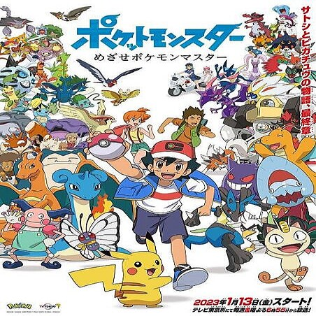-
Liga Índigo
- Episódios:1-82
-
Aventuras nas Ilhas Laranjas
- Episódios:83-118
-
A Jornada Johto
- Episódios:119-159
-
Campeões da Liga Johto
- Episódios:160-211
-
Master Quest
- Episódios:212-276
-
Avançado
- Episódios:277-316
-
Saga:Desafio Avançado
- Episódios:317-368
-
Batalha Avançada
- Episódios:369-422
-
Batalha da Fronteira
- Episódios:423-469
-
Diamante e Pérola
- Episódios:470-521
-
Batalha Dimensional
- Episódios:522-573
-
Batalhas Galáticas
- Episódios:574-626
-
Vencedores da Liga Sinnoh
- Episódios:627-660
-
Black and White
- Episódios:661-710
-
Aventures em Unova(e mais além)
- Episódios:760-804
-
A série XY
- Episódios:805-853
-
Desafio em Kalos
- Episódios:854-897
-
XY & Z
- Episódios:898-944
-
Sol & Lua
- Episódios:945-987
-
Ultra Aventuras
- Episódios:988-1036
-
Ultra Lendas
- Episódios:1037-1090
-
Jornadas
- Episódios:1091-1138
-
Jornadas de Mestre
- Episódios:1139-1180
-
Jornadas Supremas
- Episódios:1181-1226
O anime Pokémon é uma série de animação japonesa baseada nos populares jogos de vídeo da Nintendo. Ele segue as aventuras de um treinador Pokémon chamado Ash Ketchum, que sonha em se tornar um Mestre Pokémon. Acompanhado pelo seu leal parceiro Pikachu, Ash viaja pela região fictícia de Pokémon, capturando novos Pokémon, enfrentando treinadores rivais e desafiando Ginásios Pokémon para conquistar insígnias.
O objetivo final de Ash é competir na Liga Pokémon e alcançar o título de Mestre Pokémon. Ao longo do caminho, ele faz amizade com outros treinadores, como Misty e Brock, e encontra uma equipe vilã chamada Equipe Rocket, composta por Jessie, James e Meowth, que estão sempre tentando roubar Pokémon, especialmente Pikachu.
Além disso, o anime explora a relação única entre os treinadores e seus Pokémon, enfatizando valores como amizade, trabalho em equipe e respeito pela natureza. Cada episódio apresenta novos Pokémon, desafios e lições de vida para Ash e seus amigos.
O sucesso duradouro do anime Pokémon contribuiu significativamente para a popularidade contínua da franquia globalmente, cativando gerações de fãs desde sua estreia em 1997.
Linga Índigo
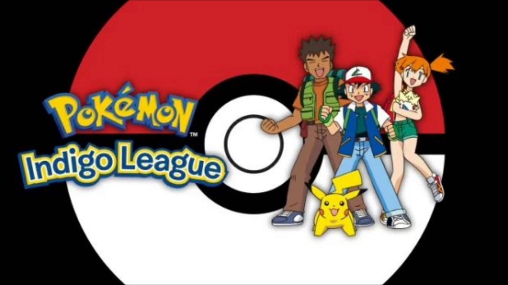Ash Ketchum, um jovem treinador, inicia sua jornada na região de Kanto. Determinado a se tornar um Mestre Pokémon, ele recebe seu primeiro Pokémon, Pikachu, e parte em uma aventura para conquistar as oito insígnias dos Ginásios e competir na Liga Pokémon. Ao longo do caminho, ele faz amizade com Misty, uma treinadora de Pokémon aquáticos, e Brock, um especialista em Pokémon do tipo Pedra. Enfrentando desafios como a Equipe Rocket, Ash aprende lições valiosas sobre amizade, determinação e respeito pelos Pokémon.
Aventuras nas Ilhas Laranjas
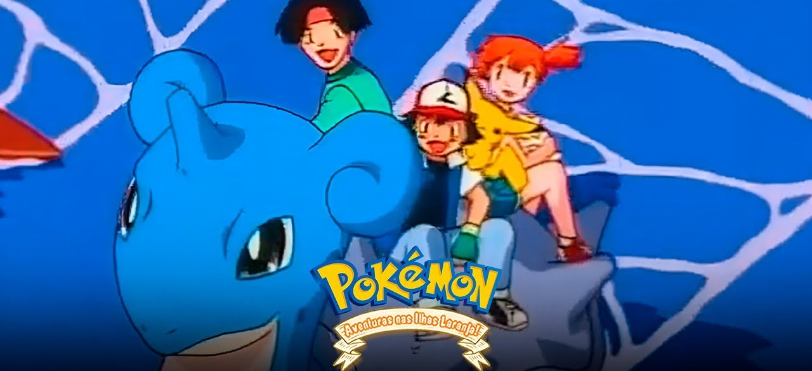Após competir na Liga Pokémon de Kanto, Ash parte para as Ilhas Laranja em busca de novos desafios. Nessa região tropical, ele enfrenta o líder de Ginásio local e o misterioso treinador de Pokémon Lendário, Lance. Durante sua jornada, Ash descobre os segredos das Ilhas Laranja, participa da Taça da Liga Laranja e fortalece ainda mais o vínculo com Pikachu.
A Jornada Johto
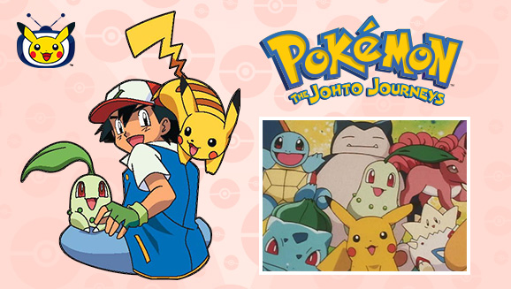Ash e seus amigos retornam à região de Johto, onde ele continua sua busca por insígnias de Ginásio para competir na Liga Johto. Enquanto viajam, encontram novos Pokémon e desafios únicos. A equipe cresce com a adição de novos companheiros, incluindo a persistente treinadora de Pokémon normais, Whitney. Durante essa jornada, Ash aprende sobre as tradições de Johto e se depara com treinadores poderosos.
Campeões da Liga Johto
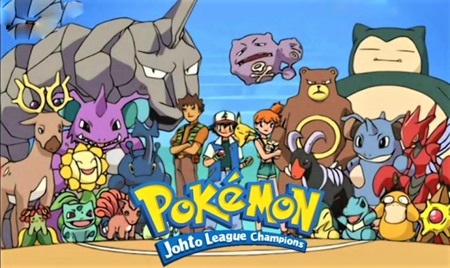Ash e seus amigos retornam à região de Johto, onde ele continua sua busca por insígnias de Ginásio para competir na Liga Johto. Enquanto viajam, encontram novos Pokémon e desafios únicos. A equipe cresce com a adição de novos companheiros, incluindo a persistente treinadora de Pokémon normais, Whitney. Durante essa jornada, Ash aprende sobre as tradições de Johto e se depara com treinadores poderosos.
Master Quest
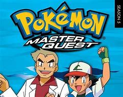Durante sua jornada, Ash enfrenta diversos líderes de ginásio, cada um apresentando desafios únicos. A temporada culmina na participação de Ash na Liga Johto, uma competição intensa onde ele enfrenta treinadores habilidosos e conhecidos, como seu rival Gary Oak.
Após a Liga Johto, a narrativa se desloca para a região de Hoenn, onde Ash continua sua busca por insígnias e sua participação na Liga Pokémon de Hoenn. Ao longo da temporada, ele faz novos amigos, como May e Max, que se juntam a ele em sua jornada.
A Equipe Rocket, composta por Jesse, James e Meowth, mantém sua missão de capturar Pikachu, proporcionando momentos cômicos e inesperados ao longo da série.
Além dos desafios tradicionais, a temporada apresenta elementos especiais, como a busca pelas Joias da Alma e encontros emocionantes com Pokémon lendários. Essas adições proporcionam uma variedade de experiências e emoções ao longo da jornada de Ash.
Avançado
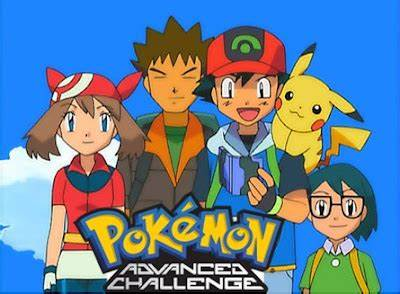Ash segue rumo a seu próximo desafio, a distante Região de Hoenn! Após dizer adeus a velhos amigos, ele faz uma nova amizade com May, uma Treinadora em começo de jornada e seu irmãozinho Max, além do sempre confiável Brock. Esse grupo de Treinadores Pokémon segue atrás de seus sonhos, com Ash conseguindo três Insígnias de Ginásio, enquanto May muda seu objetivo para seguir o caminho de Coordenadora Pokémon no Concurso Pokémon.
Desafio Avançado
Enquanto Ash, May, Max e Brock adentram ainda mais nos campos da Região de Hoenn, eles enfrentam um mundo ainda mais cheio de maravilhas, mais repleto de desafios e mais ameaçador do que eles jamais sonharam. Talvez sejam os desafios da jornada, porém, mais do que batalhas oficiais e competições, o que permite que eles se desenvolvamm elhor, cada um em sua própria especialidade.
Batalha Avançada
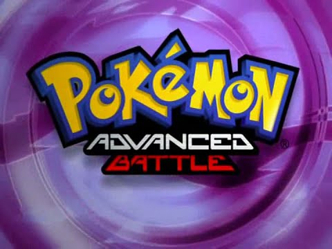Ash consegue suas duas insígnias finais e assegura um lugar no Campeonato da Liga Hoenn, enquanto May chega muito perto de não pegar sua fita final - armando o palco para enfrentamentos épicos com suas duas rivais no Grande Festival. Ash conhece dois Treinadores que se tornam seus rivais em Hoenn, enfrentando ambos durante o curso do torneio. Após retornar a Kanto e se reunir com velhos amigos, Ash é recrutado para um novo desafio—a Batalha da Fronteira!
Batalha da Fronteira
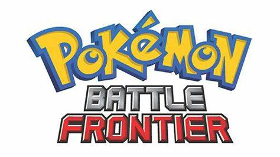O território pode ser familiar, mas até mesmo Ash e Brock encontram surpresas em sua região natal de Kanto, como um Pokémon Ranger investigando dois Pokémon Lendários! May volta ao caminho dos concursos, se destacando no Grande Festival de Kanto enquanto Ash busca as instalações secretas da Batalha da Fronteira. Se encontrá-la já era difícil, ele ainda precisa batalhar com os Cérebros da Fronteira—muito mais fortes do que qualquer Líder de Ginásio que ele já enfrentou.
Diamante e Pérola
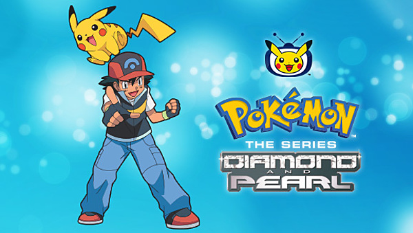Se Gary Carvalho está indo para a Região de Sinnoh, então Ash Ketchum estará logo atrás! Pronto para enfrentar a Liga de Sinnoh, Ash leva consigo Pikachu e encontra Brock em Sinnoh, onde o par de treinadores logo encontram mais alguém – Dawn, uma Coordenadora Pokémon novata determinada a seguir os passos de sua mãe. Tanto Ash quanto Dawn lutam em seus caminhos, mas logo eles fazem novos amigos e ganham novos Pokémon como Turtwig e Piplup.
Batalha Dimensional
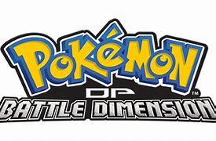As coisas vão bem para Ash enquanto ele busca suas próximas três Insígnias de Ginásio, mas não tanto para Dawn, que sofreu duas derrotas de Torneio. Ambos farão o que puderem para se tornarem treinadores melhores, desde entrar na Copa Wallace até entrar na Academia de Verão Pokémon do Professor Rowan. Com sorte, suas novas táticas logo lhes darão as ferramentas necessárias para enfrentar o último plano da Caçadora Pokémon J – assim como a ameaça crescente da Equipe Galática!
Batalhas Galáticas
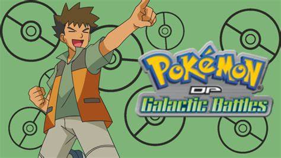Conforme a ameaça da Equipe Galática continua a pairar sobre a Região de Sinnoh, Ash e Dawn continuam sendo pegos nos planos desse misterioso grupo de vilões – assim como enfrentando outros desafios inesperados! Dawn segue com a cabeça cheia tentando lidar com os problemas de seus Pokémon enquanto a rivalidade entre Ash e Paul finalmente chega a um ponto crítico numa Batalha 6 contra 6! Este pode ser o teste supremo de estilos de treinamento – será que nossos heróis vencerão?
Vencedores da Liga Sinnoh
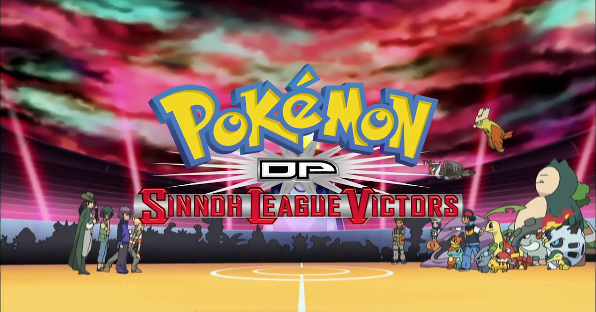Ash, Dawn E Brock estão próximos de terminarem a jornada pela Região de Sinnoh e mais preparados para enfrentarem o seus últimos desafios. A Equipe Galáctica desapareceu, permitindo que Ash concentre-se em treinar para batalhar pela 8ª Insígnia de Ginásio a qual ele precisa para se classificar para a Liga Sinnoh. Enquanto isso, Dawn tenta ganhar a última fita de torneio, a qual permitirá sua participação no Grande Festival. Enquanto a ação pega fogo, nossos heróis têm Pokémon recém evoluídos e recém capturados para oferecem toda a ajuda que eles possam dar.
Black and White
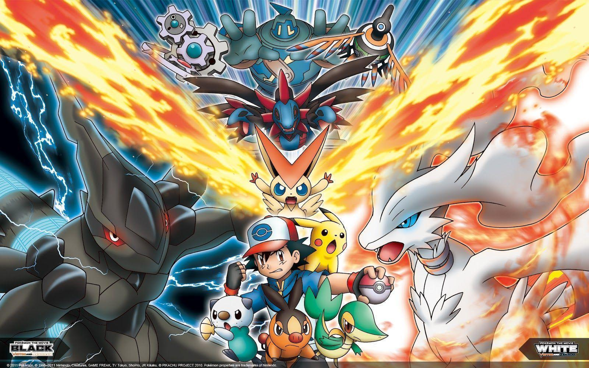A série animada Pokémon acompanha as últimas aventuras de Ash Ketchum e do Pikachu, na sua exploração da Região de Unova, como aparecem nas versões dos jogos de vídeo Pokémon Black Version e Pokémon White Version. Eles vão conhecer uma nova geração de Pokémon, nunca antes vistos, vão fazer novos amigos e rivais e desafiar novos Ginásios Pokémon na contínua demanda do Ash para se tornar Mestre Pokémon."
Aventuras em Unova(e mais além)
Novos adversários, novos amigos e dezenas de Pokémon nunca antes vistos, aguardam Ash e Pikachu em Preto e Branco: Destinos Rivais, a nova temporada da série de animação Pokémon. Enquanto Ash continua sua exploração da Região de Unova com seus amigos, ele se depara e combate contra Alder, o Mestre Campeão de Unova! Seus amigos também têm que ultrapassar seus próprios obstáculos: um luta pelo direito de poder continuar suas viagens, outro volta a enfrentar um desafio do seu passado e os três têm que unir forças para salvar uma ilha de um conflito entre poderosos e misteriosos Pokémon Lendários!
A série XY
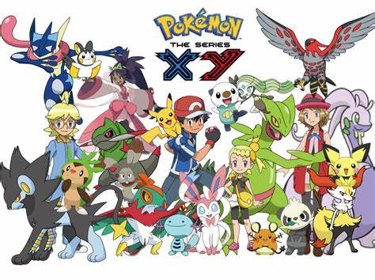A jornada de Ash Ketchum continua na série Pokémon XY quando ele chega na Região de Kalos, uma terra repleta de beleza e cheia de novos Pokémon para serem descobertos! Voltando seus olhos para a Liga Kalos, Ash está pronto para batalhar e capturar o maior número de novos Pokémon possível. Mas primeiro, ele precisa enfrentar os formidáveis Líderes de Ginásio dessa região e descobrir pesquisas empolgantes sobre a Evolução Pokémon. Mesmo já tendo novos amigos ao seu lado, Serena, Clemont e Bonnie, ele também se encontra com vários rostos e Pokémon familiares pelo caminho enquanto busca seu sonho de se tornar um Mestre Pokémon!
Desafio em Kalos
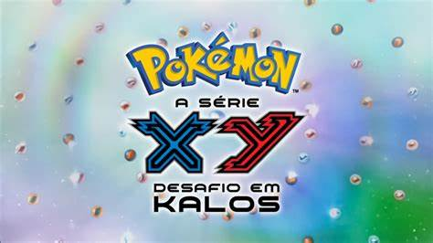Ash e Pikachu continuam sua jornada épica na próxima empolgante temporada de Pokémon: A Série XY! Enquanto Ash continua sua busca para vencer oito insígnias de ginásio para poder entrar na Liga Kalos, ele e seus companheiros de viagem farão novos amigos, forjarão novas rivalidades e, é claro, conhecerão Pokémon novos em folha! Serena, com sua parceira Fennekin e seu novo amigo Pancham entrarão no mundo da Exibição Pokémon; Clemont continuará criando invenções, torcendo para que algumas dêem certo; e Bonnie, como sempre, tentará encontrar alguém para cuidar de seu irmãozão!
XY & Z
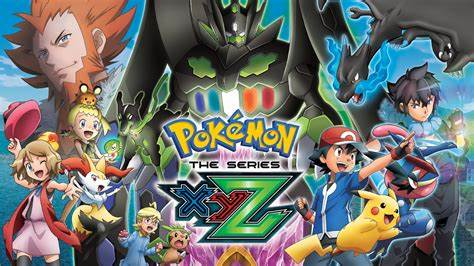A Aventura de Ash e Pikachu na Região Kalos está atingindo seu ponto alto em Pokémon, a Série: XYZ! Com uma Insígnia de Ginásio faltando para entrar na Liga Kalos, Ash está perseguindo seu sonho de se tornar um Mestre Pokémon, com determinação. Serena está mais perto de alcançar seus sonhos também, quando sua Exibição Pokémon se aproxima cada vez mais e a competição pela coroa de Rainha Kalos. Bonnie tem um novo amigo para cuidar, o adorável, mas misterioso Geleca. Mas logo é evidente que forças sombrias estão se movimentando para separá-los. Será que a sombria Equipe Flare vai conseguir, ou nossos heróis podem proteger o Geleca e toda a Região Kalos das ambições abrasadoras dela?
Sol e Lua
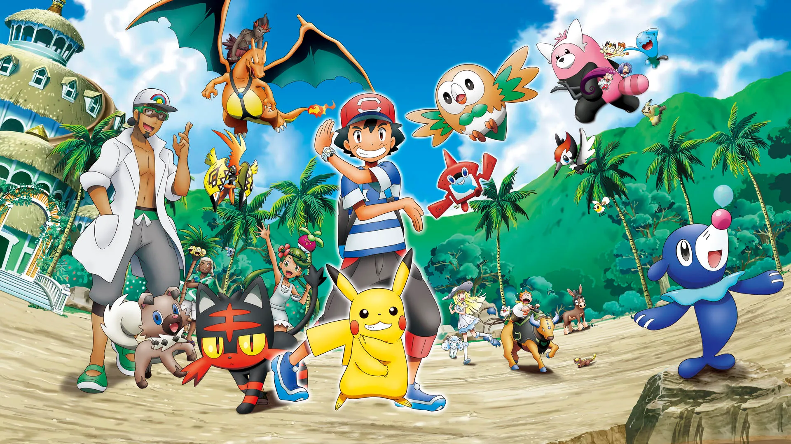Ash está indo para a escola! É o começo de uma vida de estudante que não existia até agora. Ele quer se formar? O que começa nas férias de verão na região tropical de Alola se transforma no próximo capítulo excitante na busca de Ash Ketchum para se tornar um Mestre de Pokémon! Há muito para que Ash e Pikachu explorem nesta nova região ensolarada, com um novo Pokémon excitante (Rotom) para descobrir e pessoas interessantes para aprender ao longo do caminho - incluindo o bom professor Nogueira e o amoroso Gabriel Carvalho. Novas caras ajudarão a navegar pela aventura de Ash, sob a forma de um grupo de amigos na sala - Kiawe, Vitória, Lulú e Chris - e uma misteriosa assistente de pesquisa chamada Lílian. Como sempre, a Equipe Rocket também fez a viagem para Alola, procurando capturar alguns novos Pokémon de alta potência. Mas eles têm fortes rivais na vilania: os malfeitores da Equipe Skull, que causam caos e podem ter intenções mais sinistras.
Ultra Aventuras
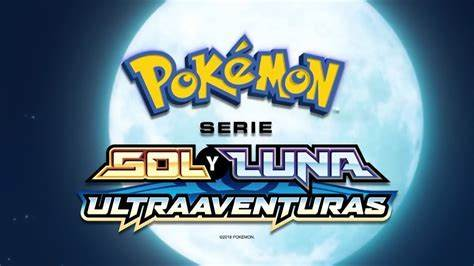A temporada "Pokémon Sol e Lua: Ultra Aventuras" continua acompanhando as aventuras de Ash Ketchum e seus amigos na região de Alola. A história se aprofunda na trama dos Ultraentes e na ameaça iminente representada pela organização maligna chamada Fundação Æther.
Os protagonistas enfrentam desafios emocionantes, como as Provas da Ilha, e Ash continua sua jornada para se tornar um Mestre Pokémon. A trama se intensifica quando Ultraentes misteriosos começam a aparecer, desencadeando eventos que ameaçam Alola e até mesmo outras dimensões.
Ao longo da temporada, Ash e seus amigos encontram novos Pokémon e fazem novas amizades, ao mesmo tempo em que confrontam inimigos poderosos. A equipe Rocket também desempenha um papel significativo na narrativa, envolvendo-se com os Ultraentes e a Fundação Æther.
A história culmina em uma emocionante batalha contra Necrozma, um Pokémon lendário que representa uma ameaça à região de Alola. Com a ajuda de seus Pokémon e aliados, Ash busca proteger Alola e salvar o mundo Pokémon de uma terrível catástrofe.Ultra Lendas
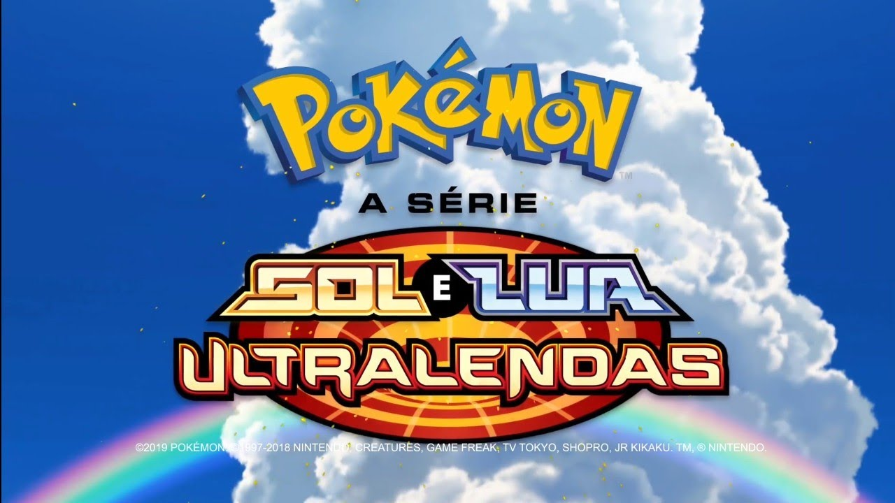A temporada segue as aventuras de Ash Ketchum e seus amigos em Alola. Enquanto buscam se tornar Mestres Pokémon, enfrentam a ameaça dos Ultraentes e a Fundação Æther. A trama se intensifica com a aparição de Ultraentes misteriosos, desencadeando eventos que ameaçam Alola e além. A equipe Rocket também se envolve, e a história culmina em uma batalha épica contra o Pokémon lendário Necrozma para proteger a região. Ao longo da temporada, os personagens enfrentam desafios, fazem novas amizades e fortalecem seus laços, oferecendo uma mistura de ação e emoção no mundo Pokémon.
Jornadas
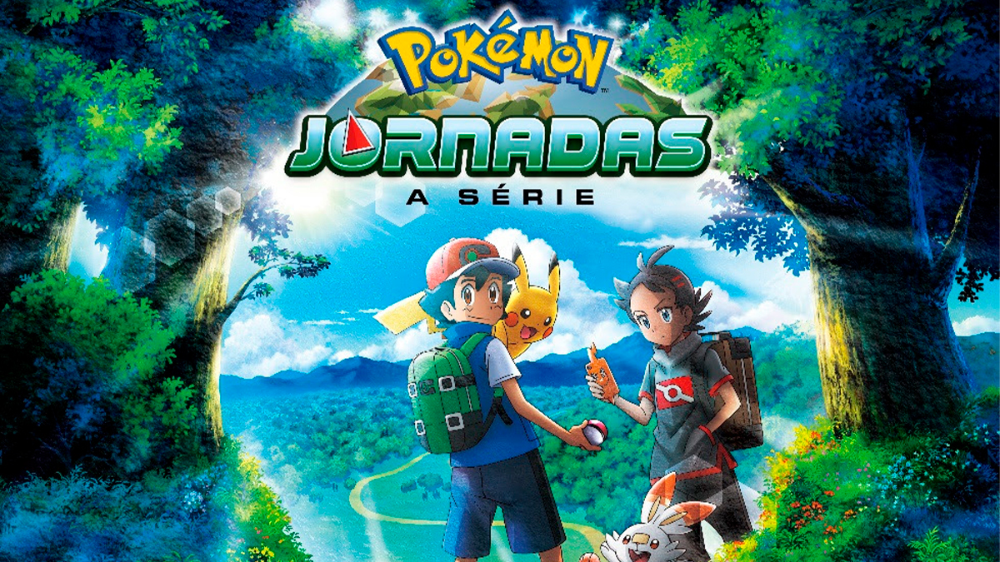Na temporada "Pokémon Jornadas", Ash embarca em uma nova aventura com seu parceiro Pikachu. Juntamente com sua nova amiga Goh, os dois exploram várias regiões do mundo Pokémon, incluindo a região de Galar, onde a oitava geração de Pokémon é introduzida. Goh tem o objetivo de capturar todos os Pokémon, enquanto Ash continua a sua busca para se tornar um Mestre Pokémon.
Durante suas viagens, Ash e Goh encontram diversos Pokémon, treinadores poderosos e desafios emocionantes. A temporada destaca a amizade entre Ash e Goh, bem como o desenvolvimento de suas habilidades como Treinadores Pokémon. Além disso, há uma ênfase na exploração e descoberta, com os personagens encontrando Pokémon lendários e participando de eventos especiais.
Jornadas de Mestre
Pokémon Jornadas de Mestre acompanha Ash e sua turma enquanto participam do Campeonato da Coroação Mundial. Com o protagonista vivendo grandes aventuras em quanto aguarda o seu lugar no torneio mundial.
Jornadas Supremas
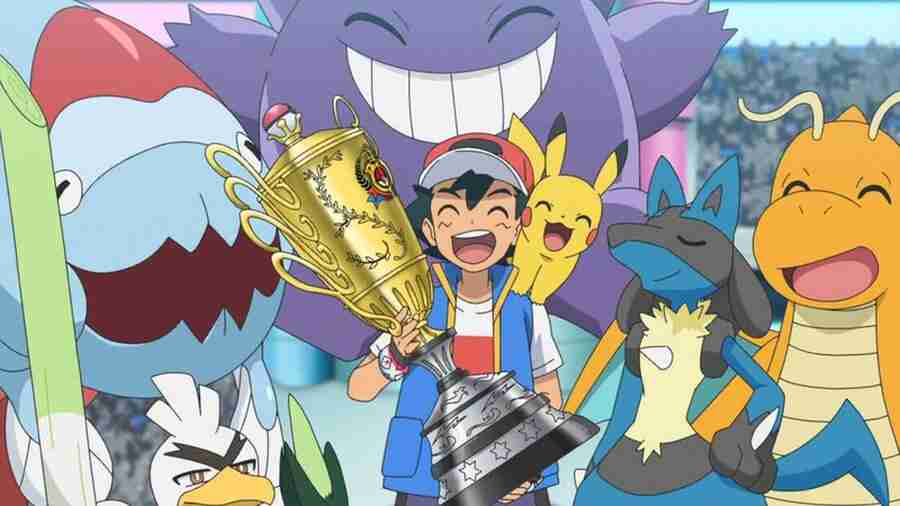 >Os desafios estão maiores do que nunca para Ash, Goh e Chloe conforme eles avançam em direção a seus objetivos! À medida que o Campeonato da Coroação Mundial de Pokémon esquenta, um treinamento intensivo está reservado para Ash, Pikachu e seus amigos Pokémon. Enquanto isso, Goh embarca em uma série de missões de admissão desafiadoras para se tornar membro do Projeto Mew. E enquanto Chloe e Eevee aprendem sobre as diferentes Evoluções que Eevee pode escolher, será que elas serão capazes de tomar uma decisão sobre seu futuro? Acompanhe o Ash no campeonato mundial e o veja se tornar campeão em sua última temporada como protagonista!